Visualizing the dimension reduction data.
FeatureDimPlot is used to plot the feature numeric values on the dimension reduction plot.
Usage
DimPlot(
data,
dims = 1:2,
group_by,
group_by_sep = "_",
split_by = NULL,
split_by_sep = "_",
pt_size = NULL,
pt_alpha = 1,
bg_color = "grey80",
label_insitu = FALSE,
show_stat = !identical(theme, "theme_blank"),
label = FALSE,
label_size = 4,
label_fg = "white",
label_bg = "black",
label_bg_r = 0.1,
label_repel = FALSE,
label_repulsion = 20,
label_pt_size = 1,
label_pt_color = "black",
label_segment_color = "black",
order = c("as-is", "reverse", "high-top", "low-top", "random"),
highlight = NULL,
highlight_alpha = 1,
highlight_size = 1,
highlight_color = "black",
highlight_stroke = 0.8,
add_mark = FALSE,
mark_type = c("hull", "ellipse", "rect", "circle"),
mark_expand = unit(3, "mm"),
mark_alpha = 0.1,
mark_linetype = 1,
stat_by = NULL,
stat_plot_type = c("pie", "ring", "bar", "line"),
stat_plot_size = 0.1,
stat_args = list(palette = "Set1"),
graph = NULL,
edge_size = c(0.05, 0.5),
edge_alpha = 0.1,
edge_color = "grey40",
add_density = FALSE,
density_color = "grey80",
density_filled = FALSE,
density_filled_palette = "Greys",
density_filled_palcolor = NULL,
lineages = NULL,
lineages_trim = c(0.01, 0.99),
lineages_span = 0.75,
lineages_palette = "Dark2",
lineages_palcolor = NULL,
lineages_arrow = arrow(length = unit(0.1, "inches")),
lineages_linewidth = 1,
lineages_line_bg = "white",
lineages_line_bg_stroke = 0.5,
lineages_whiskers = FALSE,
lineages_whiskers_linewidth = 0.5,
lineages_whiskers_alpha = 0.5,
velocity = NULL,
velocity_plot_type = c("raw", "grid", "stream"),
velocity_n_neighbors = NULL,
velocity_density = 1,
velocity_smooth = 0.5,
velocity_scale = 1,
velocity_min_mass = 1,
velocity_cutoff_perc = 5,
velocity_group_palette = "Set2",
velocity_group_palcolor = NULL,
arrow_angle = 20,
arrow_color = "black",
arrow_alpha = 1,
streamline_l = 5,
streamline_minl = 1,
streamline_res = 1,
streamline_n = 15,
streamline_width = c(0, 0.8),
streamline_alpha = 1,
streamline_color = NULL,
streamline_palette = "RdYlBu",
streamline_palcolor = NULL,
streamline_bg_color = "white",
streamline_bg_stroke = 0.5,
keep_empty = FALSE,
facet_by = NULL,
facet_scales = "fixed",
facet_nrow = NULL,
facet_ncol = NULL,
facet_byrow = TRUE,
title = NULL,
subtitle = NULL,
xlab = NULL,
ylab = NULL,
theme = "theme_this",
theme_args = list(),
aspect.ratio = 1,
legend.position = "right",
legend.direction = "vertical",
raster = NULL,
raster_dpi = c(512, 512),
hex = FALSE,
hex_linewidth = 0.5,
hex_count = TRUE,
hex_bins = 50,
hex_binwidth = NULL,
palette = "Paired",
palcolor = NULL,
seed = 8525,
combine = TRUE,
nrow = NULL,
ncol = NULL,
byrow = TRUE,
axes = NULL,
axis_titles = axes,
guides = NULL,
design = NULL,
...
)
FeatureDimPlot(
data,
dims = 1:2,
features,
split_by = NULL,
split_by_sep = "_",
lower_quantile = 0,
upper_quantile = 0.99,
lower_cutoff = NULL,
upper_cutoff = NULL,
pt_size = NULL,
pt_alpha = 1,
bg_color = "grey80",
bg_cutoff = NULL,
label_insitu = FALSE,
show_stat = !identical(theme, "theme_blank"),
color_name = "",
label = FALSE,
label_size = 4,
label_fg = "white",
label_bg = "black",
label_bg_r = 0.1,
label_repel = FALSE,
label_repulsion = 20,
label_pt_size = 1,
label_pt_color = "black",
label_segment_color = "black",
order = c("as-is", "reverse", "high-top", "low-top", "random"),
highlight = NULL,
highlight_alpha = 1,
highlight_size = 1,
highlight_color = "black",
highlight_stroke = 0.8,
add_mark = FALSE,
mark_type = c("hull", "ellipse", "rect", "circle"),
mark_expand = unit(3, "mm"),
mark_alpha = 0.1,
mark_linetype = 1,
stat_by = NULL,
stat_plot_type = c("pie", "ring", "bar", "line"),
stat_plot_size = 0.1,
stat_args = list(palette = "Set1"),
graph = NULL,
edge_size = c(0.05, 0.5),
edge_alpha = 0.1,
edge_color = "grey40",
add_density = FALSE,
density_color = "grey80",
density_filled = FALSE,
density_filled_palette = "Greys",
density_filled_palcolor = NULL,
lineages = NULL,
lineages_trim = c(0.01, 0.99),
lineages_span = 0.75,
lineages_palette = "Dark2",
lineages_palcolor = NULL,
lineages_arrow = arrow(length = unit(0.1, "inches")),
lineages_linewidth = 1,
lineages_line_bg = "white",
lineages_line_bg_stroke = 0.5,
lineages_whiskers = FALSE,
lineages_whiskers_linewidth = 0.5,
lineages_whiskers_alpha = 0.5,
velocity = NULL,
velocity_plot_type = c("raw", "grid", "stream"),
velocity_n_neighbors = NULL,
velocity_density = 1,
velocity_smooth = 0.5,
velocity_scale = 1,
velocity_min_mass = 1,
velocity_cutoff_perc = 5,
velocity_group_palette = "Set2",
velocity_group_palcolor = NULL,
arrow_angle = 20,
arrow_color = "black",
arrow_alpha = 1,
streamline_l = 5,
streamline_minl = 1,
streamline_res = 1,
streamline_n = 15,
streamline_width = c(0, 0.8),
streamline_alpha = 1,
streamline_color = NULL,
streamline_palette = "RdYlBu",
streamline_palcolor = NULL,
streamline_bg_color = "white",
streamline_bg_stroke = 0.5,
facet_by = NULL,
facet_scales = "fixed",
facet_nrow = NULL,
facet_ncol = NULL,
facet_byrow = TRUE,
title = NULL,
subtitle = NULL,
xlab = NULL,
ylab = NULL,
theme = "theme_this",
theme_args = list(),
aspect.ratio = 1,
legend.position = "right",
legend.direction = "vertical",
raster = NULL,
raster_dpi = c(512, 512),
hex = FALSE,
hex_linewidth = 0.5,
hex_count = FALSE,
hex_bins = 50,
hex_binwidth = NULL,
palette = "Spectral",
palcolor = NULL,
seed = 8525,
combine = TRUE,
nrow = NULL,
ncol = NULL,
byrow = TRUE,
axes = NULL,
axis_titles = axes,
guides = NULL,
design = NULL,
...
)Arguments
- data
A data frame.
- dims
A character vector of the column names to plot on the x and y axes or a numeric vector of the column indices.
- group_by
Columns to group the data for plotting For those plotting functions that do not support multiple groups, They will be concatenated into one column, using
group_by_sepas the separator- group_by_sep
The separator for multiple group_by columns. See
group_by- split_by
A character vector of column names to split the data and plot separately If TRUE, we will split the data by the
features. Each feature will be plotted separately.- split_by_sep
The separator for multiple split_by columns. See
split_by- pt_size
A numeric value of the point size. If NULL, the point size will be calculated based on the number of data points.
- pt_alpha
A numeric value of the point transparency. Default is 1.
- bg_color
A character string of the background or NA points. Default is "grey80".
- label_insitu
Whether to place the raw labels (group names) in the center of the points with the corresponding group. Default is FALSE, which using numbers instead of raw labels.
- show_stat
Whether to show the number of points in the subtitle. Default is TRUE.
- label
Whether to show the labels of groups. Default is FALSE.
- label_size
A numeric value of the label size. Default is 4.
- label_fg
A character string of the label foreground color. Default is "white".
- label_bg
A character string of the label background color. Default is "black".
- label_bg_r
A numeric value of the background ratio of the labels. Default is 0.1.
- label_repel
Whether to repel the labels. Default is FALSE.
- label_repulsion
A numeric value of the label repulsion. Default is 20.
- label_pt_size
A numeric value of the label point size. Default is 1.
- label_pt_color
A character string of the label point color. Default is "black".
- label_segment_color
A character string of the label segment color. Default is "black".
- order
A character string to determine the order of the points in the plot.
"as-is": no order, the order of the points in the data will be used
"reverse": reverse the order of the points in the data.
"high-top": points with high values on top
"low-top": points with low values on top
"random": random order
For
high-topandlow-top, the NA values will be always plotted at the bottom.This works on
featuresas they are numeric values. When this works ongroup_by, the ordering and coloring will not be changed in the legend. This is only affecting the order of drawing of the points in the plot. Forhigh-topandlow-topongroup_by, the levels will be sorted based on levels of the factor. Sohigh-topwill put the points with the last levels on top, andlow-topwill put the points with the first levels on top. The order of points within the same level will not be changed anyway. If you need precise control over the order ofgroup_by, set the levels of the factor before plotting. See https://github.com/pwwang/scplotter/issues/29#issuecomment-3009694130 for examples.- highlight
A character vector of the row names to highlight. Default is NULL.
- highlight_alpha
A numeric value of the highlight transparency. Default is 1.
- highlight_size
A numeric value of the highlight size. Default is 1.
- highlight_color
A character string of the highlight color. Default is "black".
- highlight_stroke
A numeric value of the highlight stroke. Default is 0.5.
- add_mark
Whether to add mark to the plot. Default is FALSE.
- mark_type
A character string of the mark type. Default is "hull".
- mark_expand
A unit value of the mark expand. Default is 3mm.
- mark_alpha
A numeric value of the mark transparency. Default is 0.1.
- mark_linetype
A numeric value of the mark line type. Default is 1.
- stat_by
A character string of the column name to calculate the statistics. Default is NULL.
- stat_plot_type
A character string of the statistic plot type. Default is "pie".
- stat_plot_size
A numeric value of the statistic plot size. Default is 0.1.
- stat_args
A list of additional arguments to the statistic plot. Default is list(palette = "Set1").
- graph
A character string of column names or the indexes in the data for the graph data. Default is NULL. If "@graph" is provided, the graph data will be extracted from the data attribute 'graph'.
- edge_size
A numeric vector of the edge size range. Default is c(0.05, 0.5).
- edge_alpha
A numeric value of the edge transparency. Default is 0.1.
- edge_color
A character string of the edge color. Default is "grey40".
- add_density
Whether to add density plot. Default is FALSE.
- density_color
A character string of the density color. Default is "grey80".
- density_filled
Whether to fill the density plot. Default is FALSE.
- density_filled_palette
A character string of the filled density palette. Default is "Greys".
- density_filled_palcolor
A character vector of the filled density palette colors. Default is NULL.
- lineages
A character vector of the column names for lineages. Default is NULL.
- lineages_trim
A numeric vector of the trim range for lineages. Default is c(0.01, 0.99).
- lineages_span
A numeric value of the lineages span. Default is 0.75.
- lineages_palette
A character string of the lineages palette. Default is "Dark2".
- lineages_palcolor
A character vector of the lineages palette colors. Default is NULL.
- lineages_arrow
An arrow object for the lineages. Default is arrow(length = unit(0.1, "inches")).
- lineages_linewidth
A numeric value of the lineages line width. Default is 1.
- lineages_line_bg
A character string of the lineages line background color. Default is "white".
- lineages_line_bg_stroke
A numeric value of the lineages line background stroke. Default is 0.5.
- lineages_whiskers
Whether to add whiskers to the lineages. Default is FALSE.
- lineages_whiskers_linewidth
A numeric value of the lineages whiskers line width. Default is 0.5.
- lineages_whiskers_alpha
A numeric value of the lineages whiskers transparency. Default is 0.5.
- velocity
A character (integer) vector of the column names (indexes) to pull from data for velocity. Default is NULL. It can also be a data frame or matrix of the velocity embedding itself. If NULL, the velocity will not be plotted.
- velocity_plot_type
A character string of the velocity plot type. Default is "raw". One of "raw", "grid", or "stream".
- velocity_n_neighbors
A numeric value of the number of neighbors to use for velocity. Default is NULL.
- velocity_density
A numeric value of the velocity density. Default is 1.
- velocity_smooth
A numeric value of the velocity smooth. Default is 0.5.
- velocity_scale
A numeric value of the velocity scale. Default is 1.
- velocity_min_mass
A numeric value of the minimum mass for velocity. Default is 1.
- velocity_cutoff_perc
A numeric value of the velocity cutoff percentage. Default is 5.
- velocity_group_palette
A character string of the velocity group palette. Default is "Set2".
- velocity_group_palcolor
A character vector of the velocity group palette colors. Default is NULL.
- arrow_angle
An optional numeric value specifying the angle of the arrowheads in degrees for velocity arrows. Default is 20.
- arrow_color
A character string specifying the color of the velocity arrowheads. Default is "black".
- arrow_alpha
A numeric value specifying the transparency of the velocity arrows. Default is 1 (fully opaque). Only works for
plot_type = "raw"andplot_type = "grid". Forplot_type = "stream", usestreamline_alphainstead.- streamline_l
An optional numeric value specifying the length of the velocity streamlines. Default is 5.
- streamline_minl
An optional numeric value specifying the minimum length of the velocity streamlines. Default is 1.
- streamline_res
An optional numeric value specifying the resolution of the velocity streamlines. Default is 1.
- streamline_n
An optional numeric value specifying the number of velocity streamlines to draw. Default is 15.
- streamline_width
A numeric vector of length 2 specifying the width of the velocity streamlines. Default is c(0, 0.8).
- streamline_alpha
A numeric value specifying the transparency of the velocity streamlines. Default is 1 (fully opaque).
- streamline_color
A character string specifying the color of the velocity streamlines.
- streamline_palette
A character string specifying the color palette to use for the velocity streamlines. Default is "RdYlBu".
- streamline_palcolor
An optional character vector specifying the colors to use for the velocity streamlines. If NULL, the colors will be generated from the streamline_palette.
- streamline_bg_color
A character string specifying the background color of the velocity streamlines. Default is "white".
- streamline_bg_stroke
A numeric value specifying the background stroke width of the velocity streamlines. Default is 0.5.
- keep_empty
Logical or character. Whether to keep unused factor levels on categorical axes.
FALSE(default): Drop unused factor levels viadroplevels().TRUE: Keep all factor levels defined in the data, even if they have no observations. For plots with both x and y categorical, applies to both axes."x": Keep unused levels only on the x-axis, drop from y-axis."y": Keep unused levels only on the y-axis, drop from x-axis.c("x", "y")or"xy": Explicitly keep unused levels on both axes (same asTRUE).
Note: This parameter is distinct from
keep_na. Usekeep_empty = TRUEwhen you need to show all possible categories (e.g., all 12 months even if some have no data). For more complex completeness requirements, usetidyr::complete()before plotting.Backward compatibility: If
keep_nais not specified andkeep_emptyis provided,keep_emptywill control both NA values and unused levels (legacy behavior).- facet_by
A character string specifying the column name of the data frame to facet the plot. Otherwise, the data will be split by
split_byand generate multiple plots and combine them into one usingpatchwork::wrap_plots- facet_scales
Whether to scale the axes of facets. Default is "fixed" Other options are "free", "free_x", "free_y". See
ggplot2::facet_wrap- facet_nrow
A numeric value specifying the number of rows in the facet. When facet_by is a single column and facet_wrap is used.
- facet_ncol
A numeric value specifying the number of columns in the facet. When facet_by is a single column and facet_wrap is used.
- facet_byrow
A logical value indicating whether to fill the plots by row. Default is TRUE.
- title
A character string specifying the title of the plot. A function can be used to generate the title based on the default title. This is useful when split_by is used and the title needs to be dynamic.
- subtitle
A character string specifying the subtitle of the plot.
- xlab
A character string specifying the x-axis label.
- ylab
A character string specifying the y-axis label.
- theme
A character string or a theme class (i.e. ggplot2::theme_classic) specifying the theme to use. Default is "theme_this".
- theme_args
A list of arguments to pass to the theme function.
- aspect.ratio
A numeric value specifying the aspect ratio of the plot.
- legend.position
A character string specifying the position of the legend. if
waiver(), for single groups, the legend will be "none", otherwise "right".- legend.direction
A character string specifying the direction of the legend.
- raster
Whether to raster the plot. Default is NULL.
- raster_dpi
A numeric vector of the raster dpi. Default is c(512, 512).
- hex
Whether to use hex plot. Default is FALSE.
- hex_linewidth
A numeric value of the hex line width. Default is 0.5.
- hex_count
Whether to count the hex.
- hex_bins
A numeric value of the hex bins. Default is 50.
- hex_binwidth
A numeric value of the hex bin width. Default is NULL.
- palette
A character string specifying the palette to use. A named list or vector can be used to specify the palettes for different
split_byvalues.- palcolor
A character string specifying the color to use in the palette. A named list can be used to specify the colors for different
split_byvalues. If some values are missing, the values from the palette will be used (palcolor will be NULL for those values).- seed
The random seed to use. Default is 8525.
- combine
Whether to combine the plots into one when facet is FALSE. Default is TRUE.
- nrow
A numeric value specifying the number of rows in the facet.
- ncol
A numeric value specifying the number of columns in the facet.
- byrow
A logical value indicating whether to fill the plots by row.
- axes
A string specifying how axes should be treated. Passed to
patchwork::wrap_plots(). Only relevant whensplit_byis used andcombineis TRUE. Options are:'keep' will retain all axes in individual plots.
'collect' will remove duplicated axes when placed in the same run of rows or columns of the layout.
'collect_x' and 'collect_y' will remove duplicated x-axes in the columns or duplicated y-axes in the rows respectively.
- axis_titles
A string specifying how axis titltes should be treated. Passed to
patchwork::wrap_plots(). Only relevant whensplit_byis used andcombineis TRUE. Options are:'keep' will retain all axis titles in individual plots.
'collect' will remove duplicated titles in one direction and merge titles in the opposite direction.
'collect_x' and 'collect_y' control this for x-axis titles and y-axis titles respectively.
- guides
A string specifying how guides should be treated in the layout. Passed to
patchwork::wrap_plots(). Only relevant whensplit_byis used andcombineis TRUE. Options are:'collect' will collect guides below to the given nesting level, removing duplicates.
'keep' will stop collection at this level and let guides be placed alongside their plot.
'auto' will allow guides to be collected if a upper level tries, but place them alongside the plot if not.
- design
Specification of the location of areas in the layout, passed to
patchwork::wrap_plots(). Only relevant whensplit_byis used andcombineis TRUE. When specified,nrow,ncol, andbyroware ignored. Seepatchwork::wrap_plots()for more details.- ...
Additional arguments.
- features
A character vector of the column names to plot as features.
- lower_quantile, upper_quantile, lower_cutoff, upper_cutoff
Vector of minimum and maximum cutoff values or quantile values for each feature.
- bg_cutoff
A numeric value to be used a cutoff to set the feature values to NA. Default is NULL.
- color_name
A character string of the color legend name. Default is "".
Value
A ggplot object or wrap_plots object or a list of ggplot objects
A ggplot object or wrap_plots object or a list of ggplot objects
Examples
# \donttest{
data(dim_example)
DimPlot(dim_example, group_by = "clusters")
DimPlot(dim_example, group_by = "clusters", theme = "theme_blank")
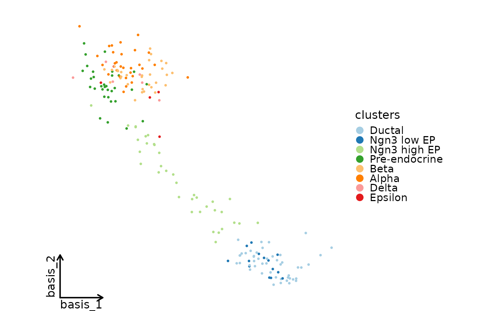
DimPlot(dim_example, group_by = "clusters", theme = ggplot2::theme_classic,
theme_args = list(base_size = 16), palette = "seurat")
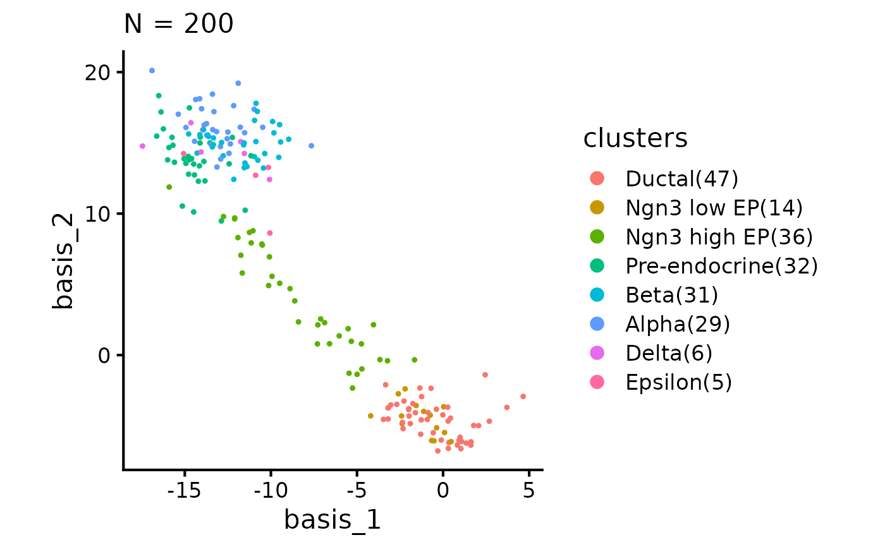
DimPlot(dim_example, group_by = "clusters", raster = TRUE, raster_dpi = 50)
DimPlot(dim_example, group_by = "clusters", highlight = 1:20,
highlight_color = "black", highlight_stroke = 2)
DimPlot(dim_example, group_by = "clusters", highlight = TRUE, facet_by = "group",
theme = "theme_blank")
DimPlot(dim_example, group_by = "clusters", label = TRUE,
label_size = 5, label_bg_r = 0.2)
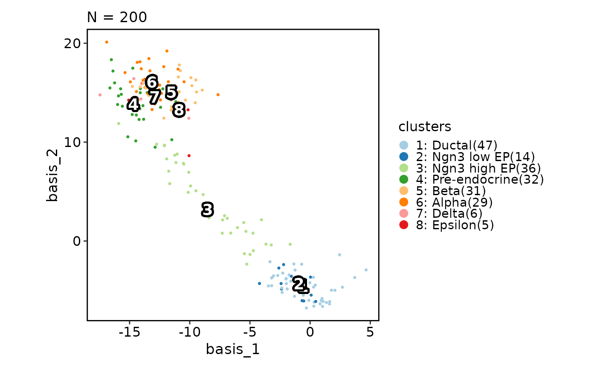
DimPlot(dim_example, group_by = "clusters", label = TRUE, label_fg = "red",
label_bg = "yellow", label_size = 5)
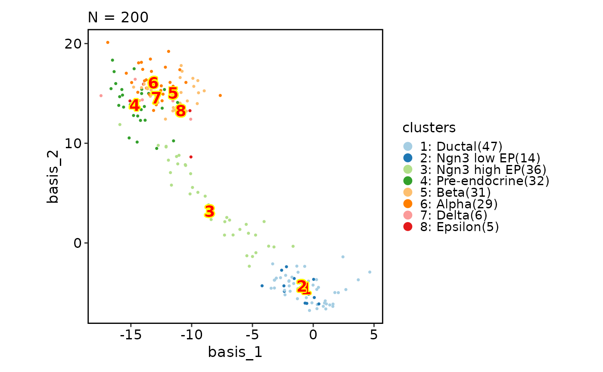
DimPlot(dim_example, group_by = "clusters", label = TRUE, label_insitu = TRUE)
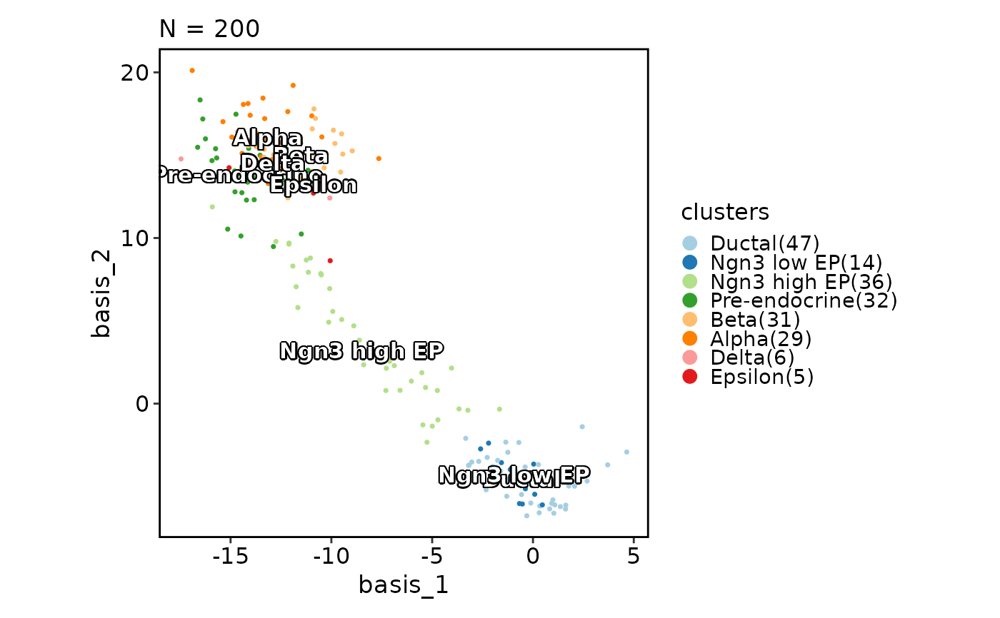
DimPlot(dim_example, group_by = "clusters", add_mark = TRUE)
DimPlot(dim_example, group_by = "clusters", add_mark = TRUE, mark_linetype = 2)
DimPlot(dim_example, group_by = "clusters", add_mark = TRUE, mark_type = "ellipse")
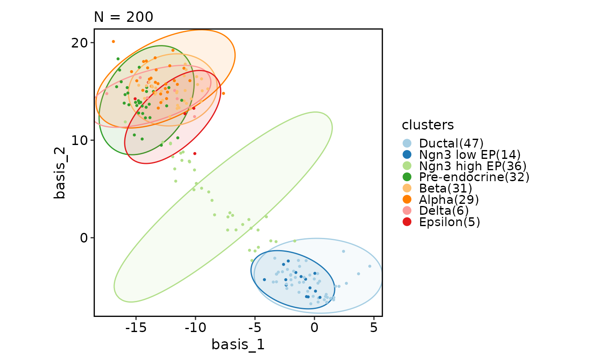
DimPlot(dim_example, group_by = "clusters", add_density = TRUE)
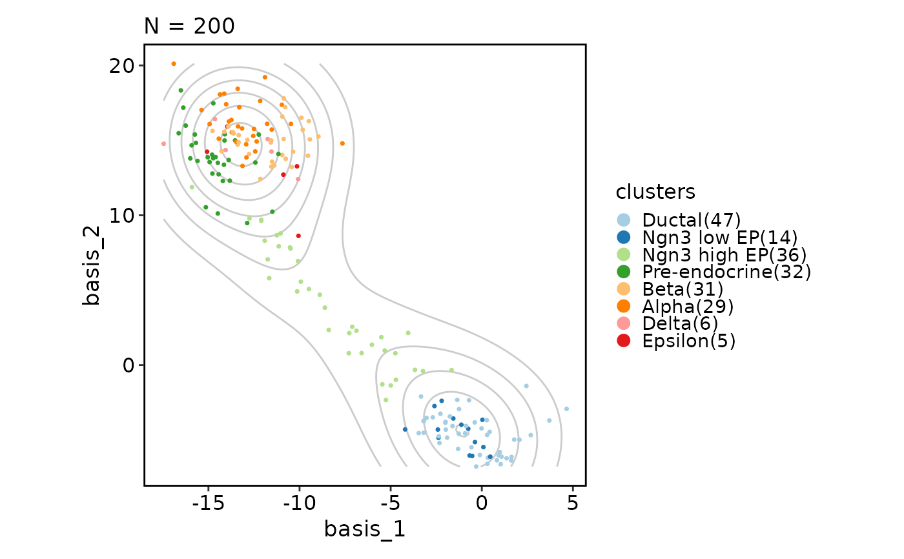
DimPlot(dim_example, group_by = "clusters", add_density = TRUE, density_filled = TRUE)
#> Warning: Removed 396 rows containing missing values or values outside the scale range
#> (`geom_raster()`).
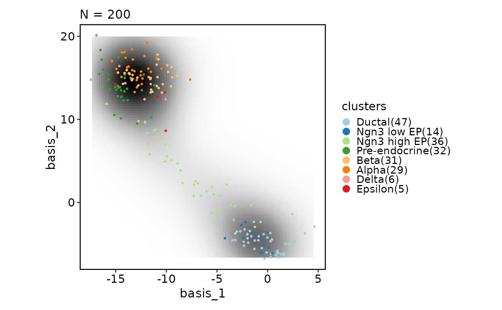
DimPlot(dim_example, group_by = "clusters", add_density = TRUE, density_filled = TRUE,
density_filled_palette = "Blues", highlight = TRUE)
#> Warning: Removed 396 rows containing missing values or values outside the scale range
#> (`geom_raster()`).
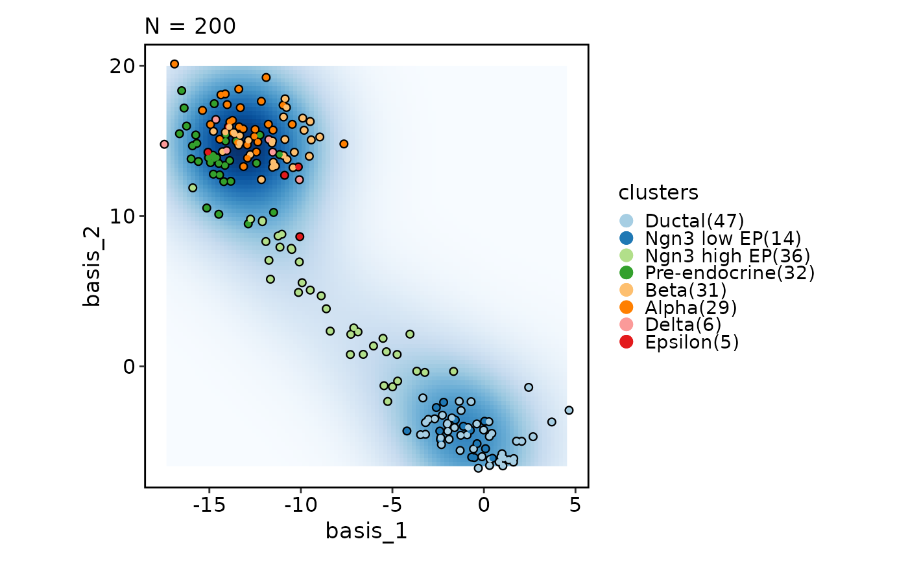
DimPlot(dim_example, group_by = "clusters", stat_by = "group")
DimPlot(dim_example, group_by = "clusters", stat_by = "group",
stat_plot_type = "bar", stat_plot_size = 0.06)
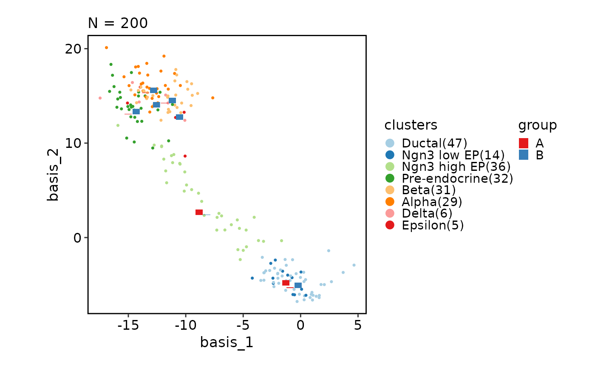
DimPlot(dim_example, group_by = "clusters", hex = TRUE)
#> Warning: Removed 1 row containing missing values or values outside the scale range
#> (`geom_hex()`).
DimPlot(dim_example, group_by = "clusters", hex = TRUE, hex_bins = 20)
#> Warning: Removed 5 rows containing missing values or values outside the scale range
#> (`geom_hex()`).
DimPlot(dim_example, group_by = "clusters", hex = TRUE, hex_count = FALSE)
#> Warning: Removed 1 row containing missing values or values outside the scale range
#> (`geom_hex()`).
DimPlot(dim_example, group_by = "clusters", graph = "@graph", edge_color = "grey80")
 DimPlot(dim_example, group_by = "clusters", lineages = c("stochasticbasis_1", "stochasticbasis_2"))
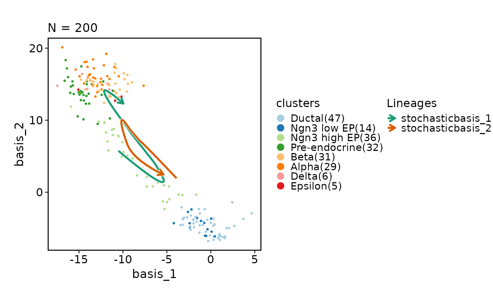
DimPlot(dim_example, group_by = "clusters", lineages = c("stochasticbasis_1", "stochasticbasis_2"),
lineages_whiskers = TRUE, lineages_whiskers_linewidth = 0.1)
DimPlot(dim_example, group_by = "clusters", lineages = c("stochasticbasis_1", "stochasticbasis_2"),
lineages_span = 0.4)
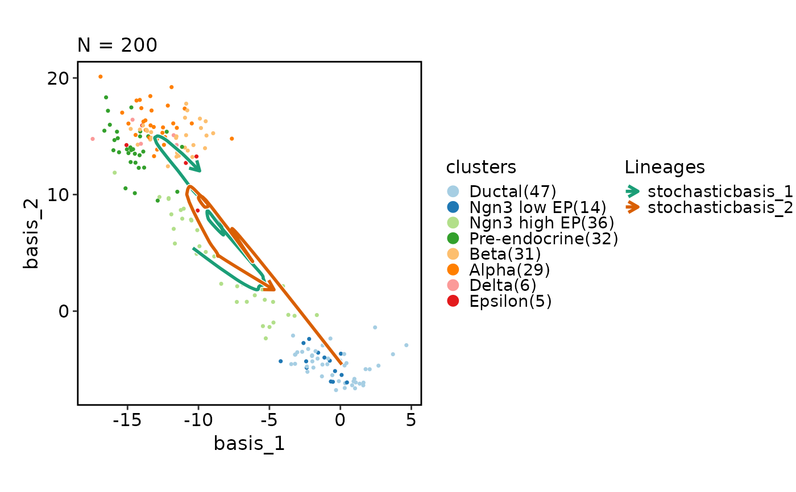
DimPlot(dim_example, group_by = "clusters", split_by = "group",
palette = list(A = "Paired", B = "Set1"))
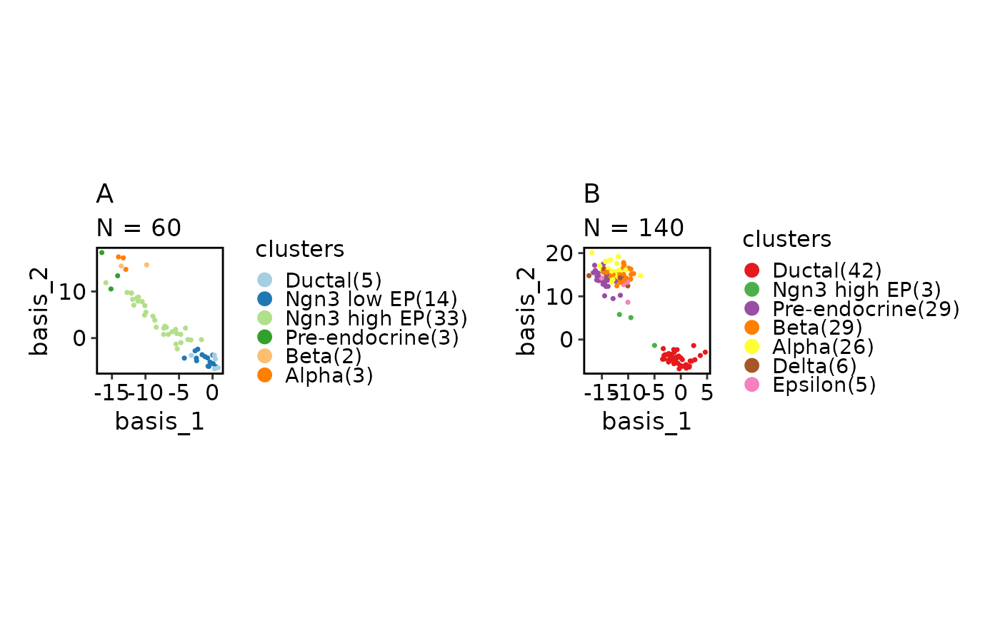
# velocity plot
DimPlot(dim_example, group_by = "clusters", velocity = c("stochasticbasis_1", "stochasticbasis_2"),
pt_alpha = 0)
#> Warning: Removed 1 row containing missing values or values outside the scale range
#> (`geom_segment()`).
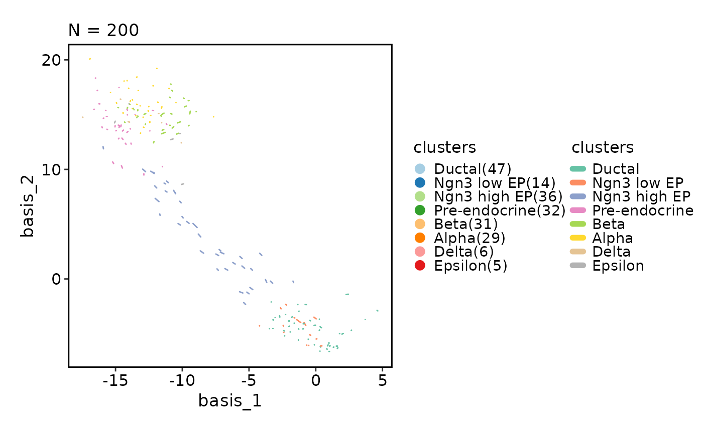
DimPlot(dim_example, group_by = "clusters", velocity = 3:4,
velocity_plot_type = "grid", arrow_alpha = 0.6)
#> Warning: Removed 6 rows containing missing values or values outside the scale range
#> (`geom_segment()`).
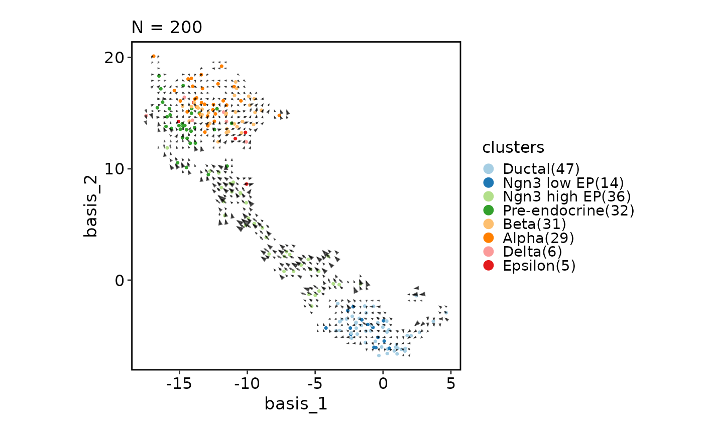
DimPlot(dim_example, group_by = "clusters", velocity = 3:4,
velocity_plot_type = "stream")
# }
# \donttest{
FeatureDimPlot(dim_example, features = "stochasticbasis_1", pt_size = 2)
FeatureDimPlot(dim_example, features = "stochasticbasis_1", pt_size = 2, bg_cutoff = 0)
FeatureDimPlot(dim_example, features = "stochasticbasis_1", raster = TRUE, raster_dpi = 30)
FeatureDimPlot(dim_example, features = c("stochasticbasis_1", "stochasticbasis_2"),
pt_size = 2)
FeatureDimPlot(dim_example, features = c("stochasticbasis_1"), pt_size = 2,
facet_by = "group")
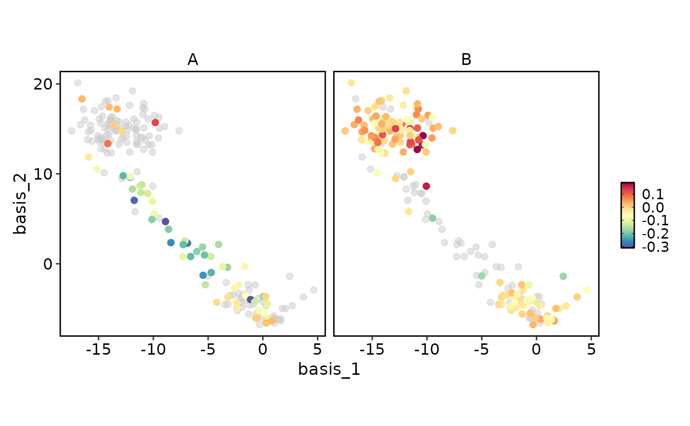
# Can't use facet_by for multiple features
FeatureDimPlot(dim_example, features = c("stochasticbasis_1", "stochasticbasis_2"),
pt_size = 2)
DimPlot(dim_example, group_by = "clusters", lineages = c("stochasticbasis_1", "stochasticbasis_2"))
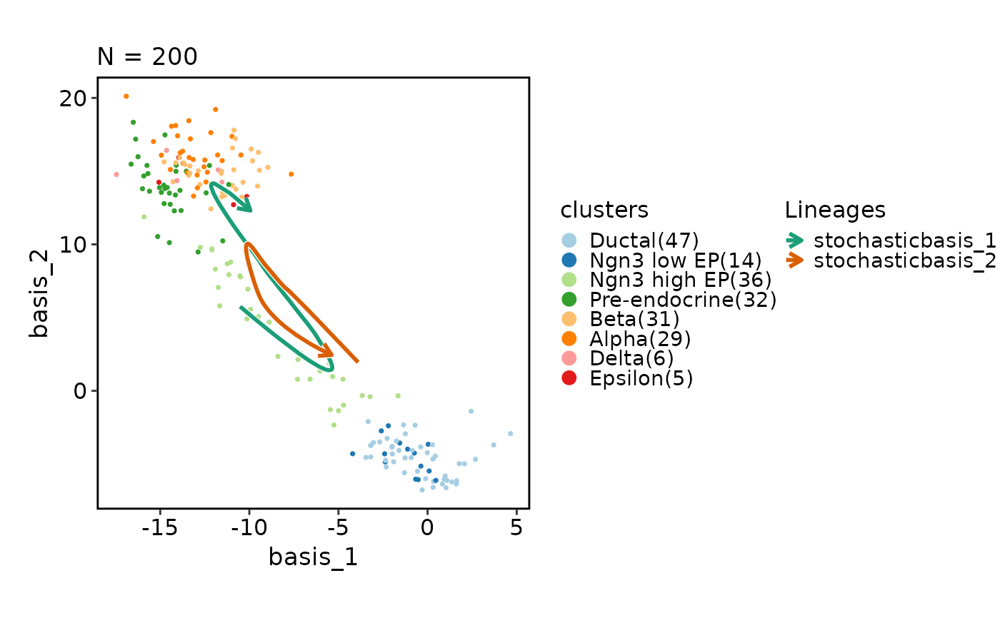
DimPlot(dim_example, group_by = "clusters", lineages = c("stochasticbasis_1", "stochasticbasis_2"),
lineages_whiskers = TRUE, lineages_whiskers_linewidth = 0.1)
DimPlot(dim_example, group_by = "clusters", lineages = c("stochasticbasis_1", "stochasticbasis_2"),
lineages_span = 0.4)
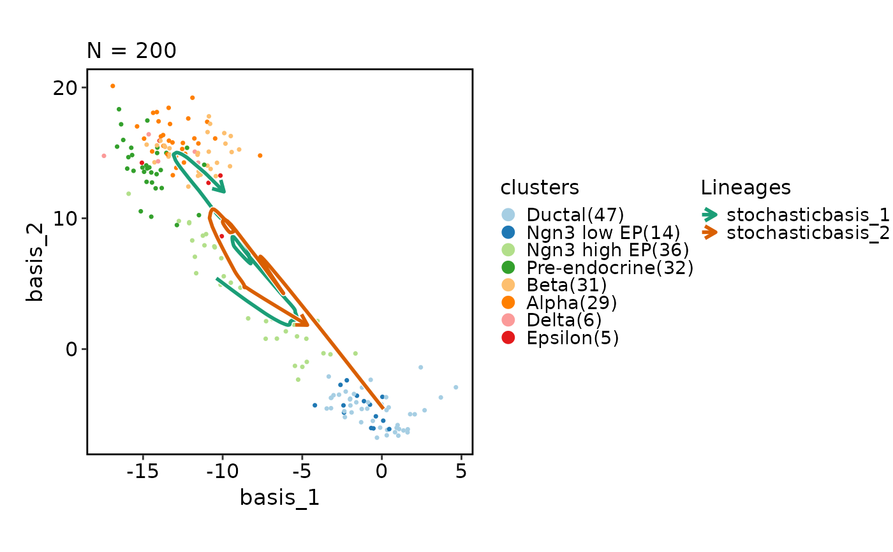
DimPlot(dim_example, group_by = "clusters", split_by = "group",
palette = list(A = "Paired", B = "Set1"))
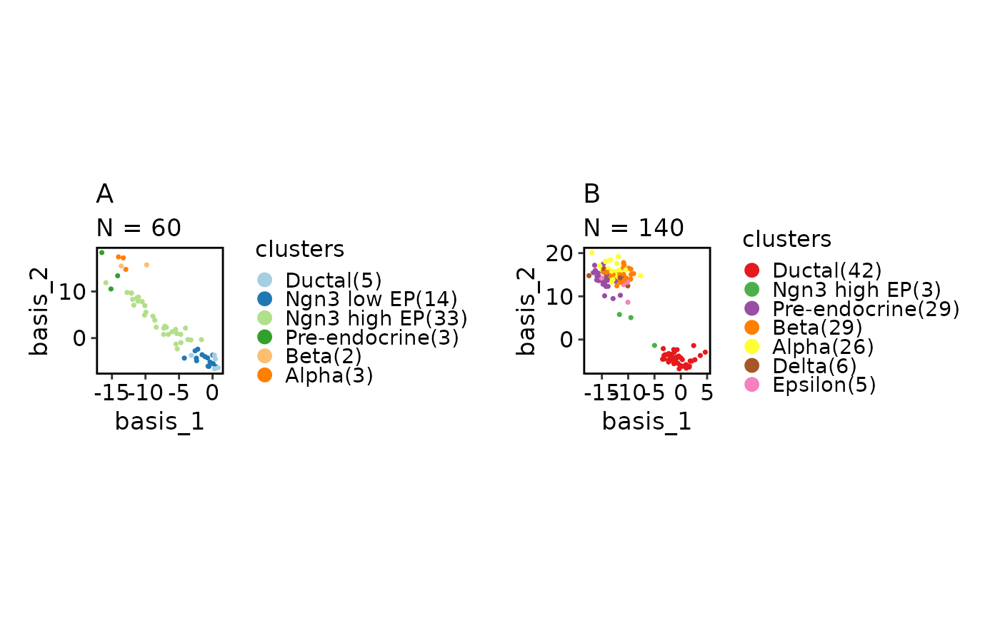
# velocity plot
DimPlot(dim_example, group_by = "clusters", velocity = c("stochasticbasis_1", "stochasticbasis_2"),
pt_alpha = 0)
#> Warning: Removed 1 row containing missing values or values outside the scale range
#> (`geom_segment()`).
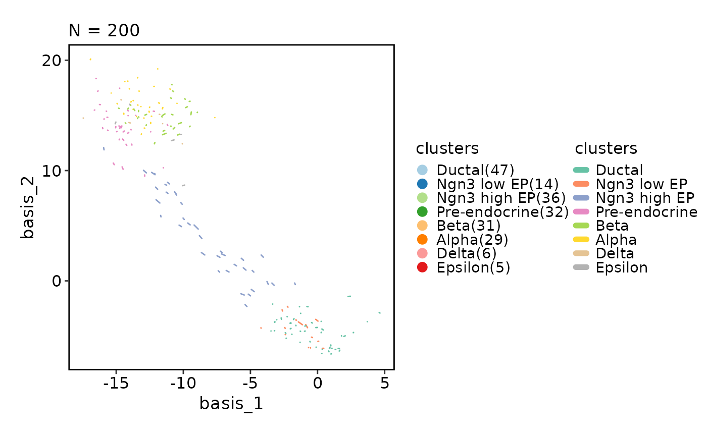
DimPlot(dim_example, group_by = "clusters", velocity = 3:4,
velocity_plot_type = "grid", arrow_alpha = 0.6)
#> Warning: Removed 6 rows containing missing values or values outside the scale range
#> (`geom_segment()`).
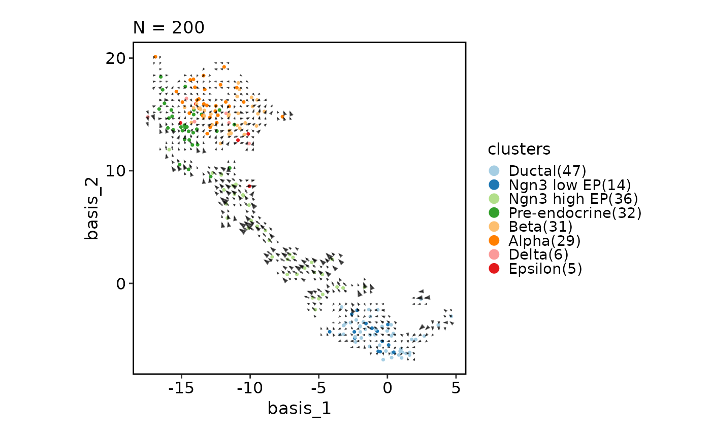
DimPlot(dim_example, group_by = "clusters", velocity = 3:4,
velocity_plot_type = "stream")
# }
# \donttest{
FeatureDimPlot(dim_example, features = "stochasticbasis_1", pt_size = 2)
FeatureDimPlot(dim_example, features = "stochasticbasis_1", pt_size = 2, bg_cutoff = 0)
FeatureDimPlot(dim_example, features = "stochasticbasis_1", raster = TRUE, raster_dpi = 30)
FeatureDimPlot(dim_example, features = c("stochasticbasis_1", "stochasticbasis_2"),
pt_size = 2)
FeatureDimPlot(dim_example, features = c("stochasticbasis_1"), pt_size = 2,
facet_by = "group")
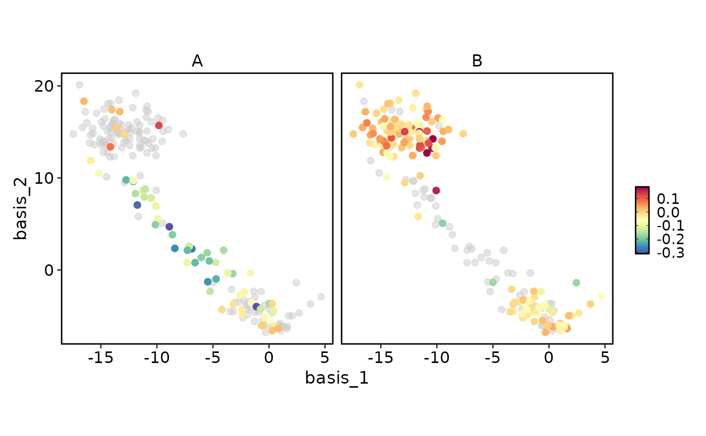
# Can't use facet_by for multiple features
FeatureDimPlot(dim_example, features = c("stochasticbasis_1", "stochasticbasis_2"),
pt_size = 2)
 # We can use split_by
FeatureDimPlot(dim_example, features = c("stochasticbasis_1", "stochasticbasis_2"),
split_by = "group", nrow = 2)
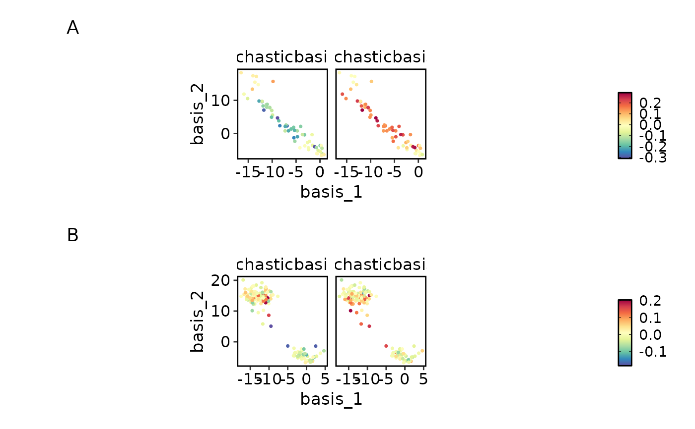
FeatureDimPlot(dim_example, features = c("stochasticbasis_1", "stochasticbasis_2"),
highlight = TRUE)
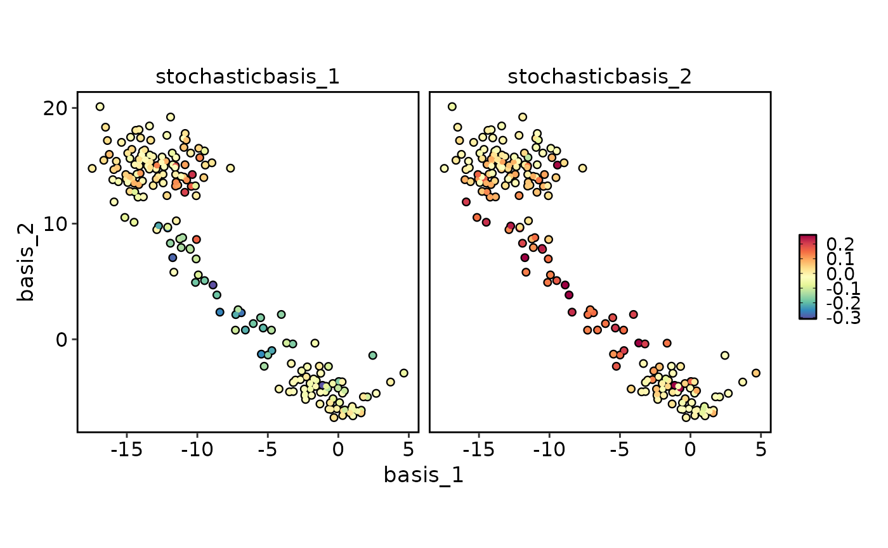
FeatureDimPlot(dim_example, features = c("stochasticbasis_1", "stochasticbasis_2"),
hex = TRUE, hex_bins = 15)
#> Warning: Removed 8 rows containing missing values or values outside the scale range
#> (`geom_hex()`).
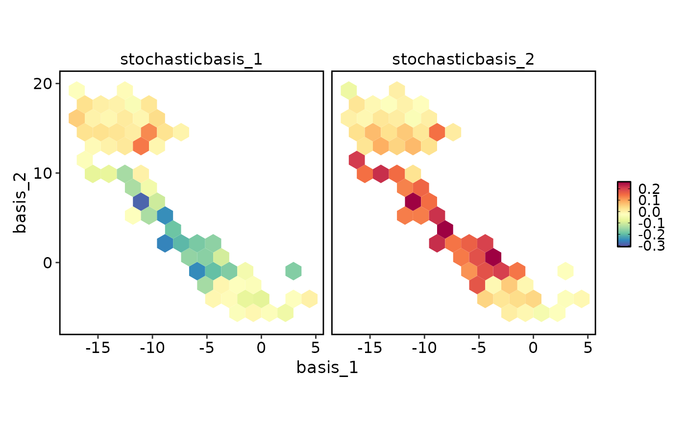
FeatureDimPlot(dim_example, features = c("stochasticbasis_1", "stochasticbasis_2"),
hex = TRUE, hex_bins = 15, split_by = "group", palette = list(A = "Reds", B = "Blues"))
#> Warning: Removed 6 rows containing missing values or values outside the scale range
#> (`geom_hex()`).
#> Warning: Removed 8 rows containing missing values or values outside the scale range
#> (`geom_hex()`).
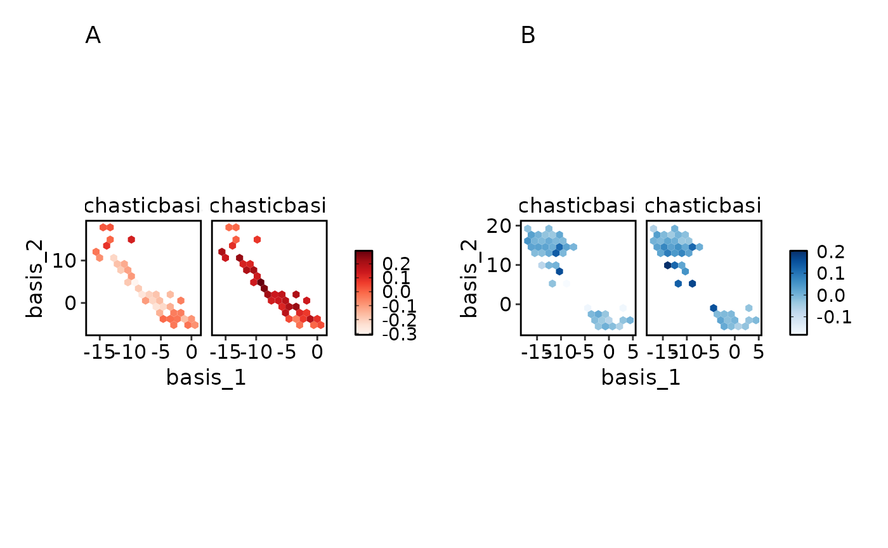
# }
# We can use split_by
FeatureDimPlot(dim_example, features = c("stochasticbasis_1", "stochasticbasis_2"),
split_by = "group", nrow = 2)
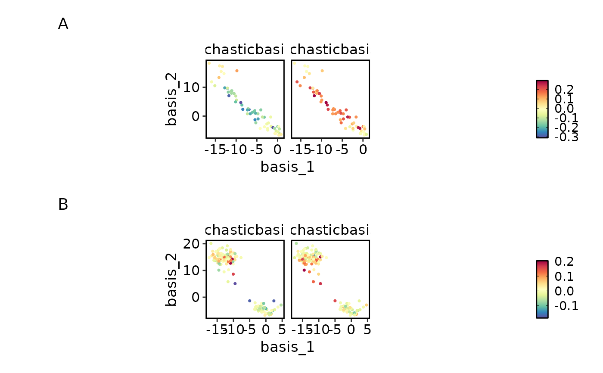
FeatureDimPlot(dim_example, features = c("stochasticbasis_1", "stochasticbasis_2"),
highlight = TRUE)
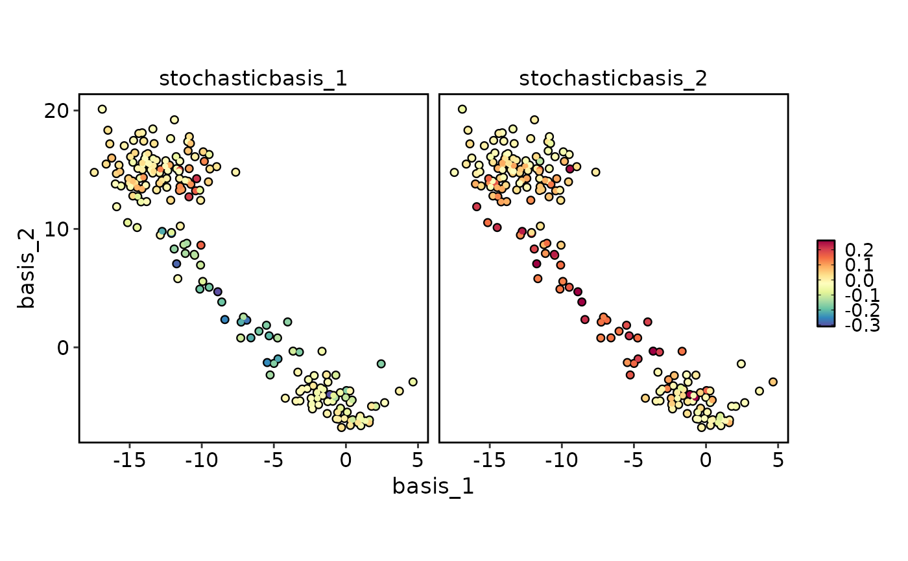
FeatureDimPlot(dim_example, features = c("stochasticbasis_1", "stochasticbasis_2"),
hex = TRUE, hex_bins = 15)
#> Warning: Removed 8 rows containing missing values or values outside the scale range
#> (`geom_hex()`).
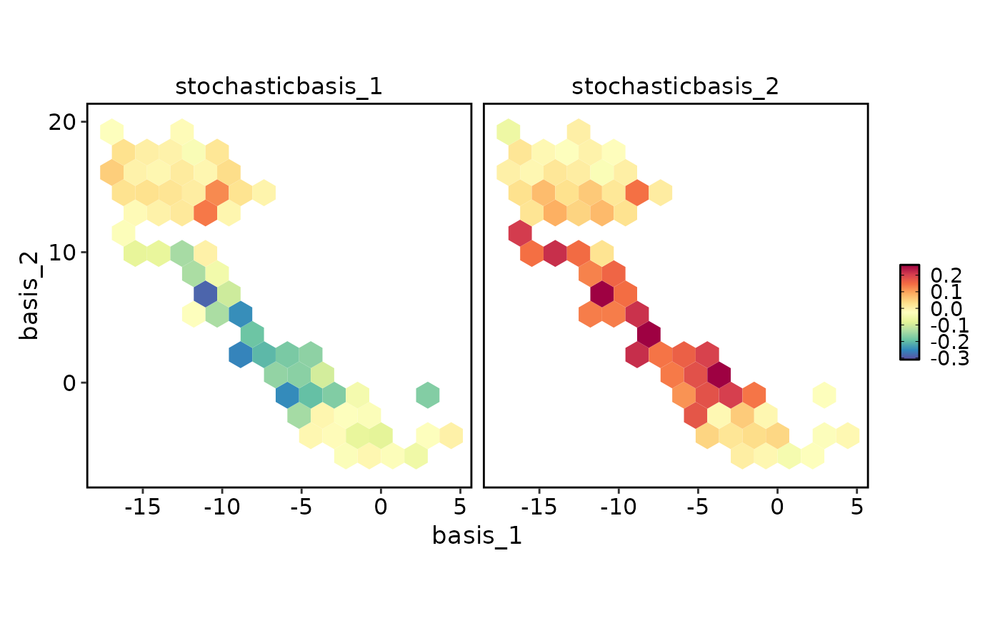
FeatureDimPlot(dim_example, features = c("stochasticbasis_1", "stochasticbasis_2"),
hex = TRUE, hex_bins = 15, split_by = "group", palette = list(A = "Reds", B = "Blues"))
#> Warning: Removed 6 rows containing missing values or values outside the scale range
#> (`geom_hex()`).
#> Warning: Removed 8 rows containing missing values or values outside the scale range
#> (`geom_hex()`).
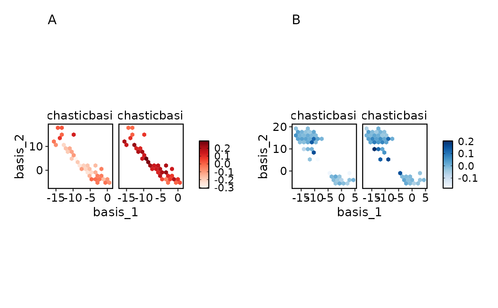
# }